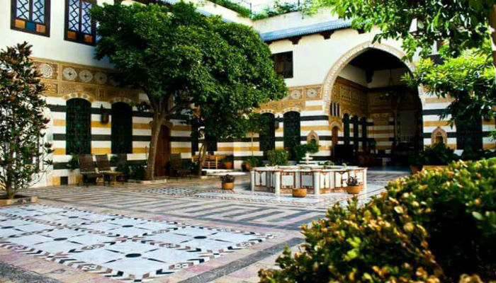

Şam, sadece bir başkent değil; M.Ö. 10.000’li yıllara kadar uzanan kökleriyle, üzerinde yaşamın hiçbir zaman durmadığı, dünyanın bilinen en eski yerleşim yeridir. "Şam-ı Şerif" olarak da anılan bu kadim şehir, Arkaik dönemden bu yana Mezopotamya ve Akdeniz arasındaki ticaret yollarının kalbinde yer alarak medeniyetlerin buluşma noktası olmuştur. Birçok imparatorluğun yükselişine ve çöküşüne tanıklık etmesine rağmen, ruhunu ve dokusunu korumayı başarmış nadir şehirlerdendir.
